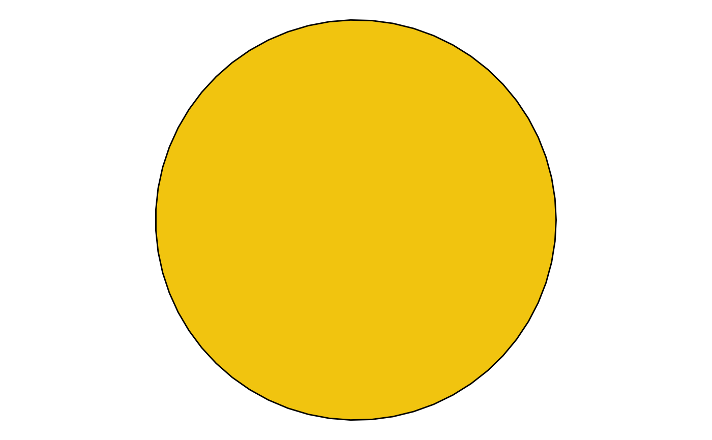
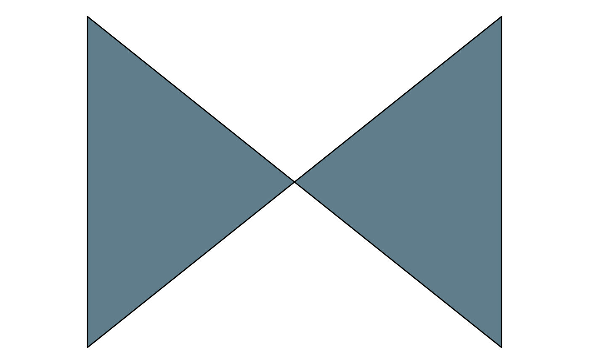
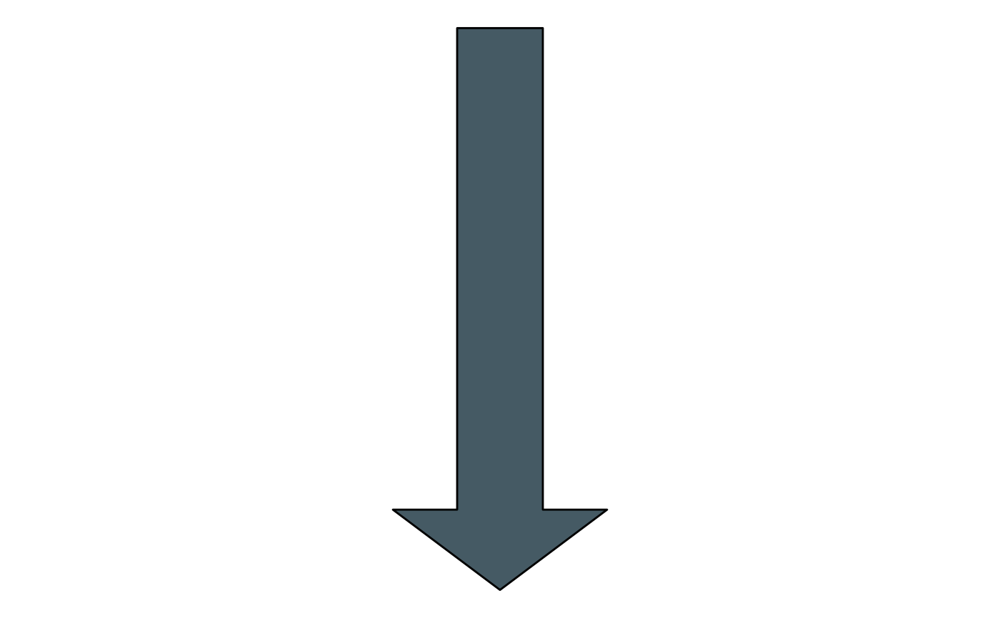
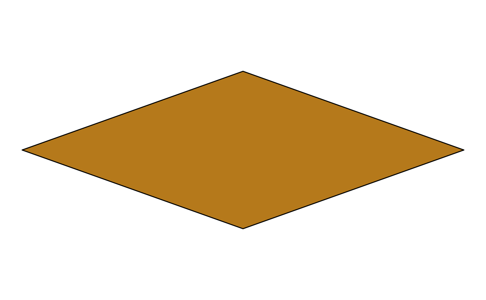
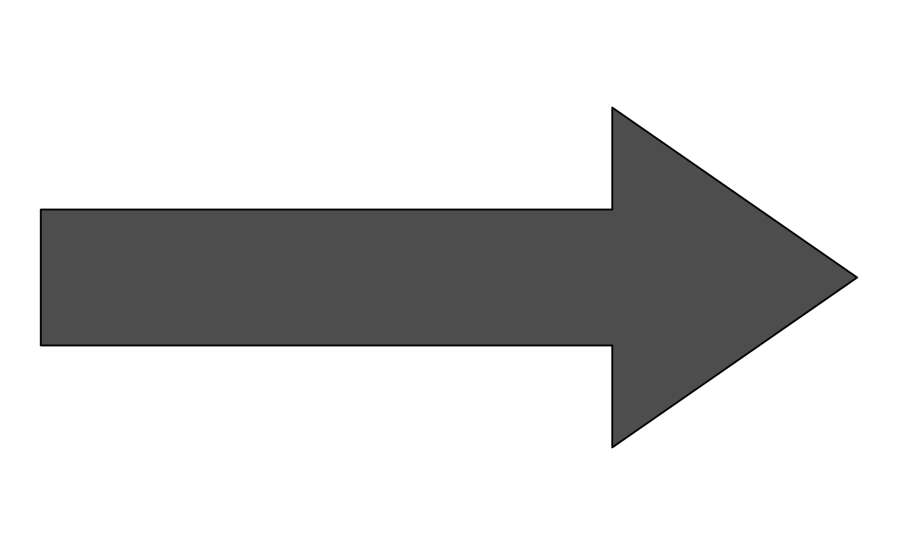
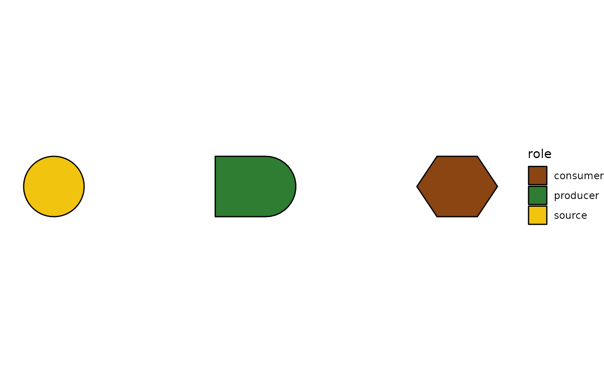

Low-level tibble-returning functions that compute polygon vertices
for each of H.T. Odum's Energy Systems Language (ESL) symbols. Used
internally by the geom_odum_source() family; also exported for
users who want to hand-compose ggplot2::geom_polygon() layers,
animate with gganimate, or render outside ggplot2.
Two inputs enter the flat left edge, one output exits the pointed
right. Odum's canonical "multiplicative junction" symbol —
distinctly NOT a diamond (that shape is a switch in Odum's ESL).
Odum's autocatalytic-unit symbol. Same silhouette as storage
rotated 90° right: flat left edge, straight top+bottom, semi-circular
right end.
Odum's on/off logic gate. Two triangles meeting at a central point, bounding-box (w, h).
Odum's "self-limited" unit — represents a producer/consumer whose output saturates.
Returns a data.frame with TWO groups: the down-arrow polygon and the
horizontal ground line as a separate row-set (id column
distinguishes them). Users can render together with a single
geom_polygon + geom_segment, or use
geom_odum_heat_sink() which wraps both.
Money flows in the opposite direction of energy in Odum's ESL, so
this symbol is drawn with a dashed connection to the transacting
unit. The returned tibble is the diamond body; the caller adds a
geom_segment(linetype="dashed") for the flow line and a
text label for "$".
Wikipedia's chart shows this as a lone right-pointing arrow. This
helper returns the arrow polygon (shaft + triangular head) for
drawing with geom_polygon; use geom_odum_flow() to add it
inside a ggplot pipeline.
Usage
odum_circle(cx, cy, r, id, n = 60)
odum_source(cx, cy, r, id, n = 60)
odum_storage(cx, cy, w, h, id, n = 20)
odum_consumer(cx, cy, w, h, id)
odum_interaction(cx, cy, w, h, id)
odum_producer(cx, cy, w, h, id, n = 20)
odum_switch(cx, cy, w, h, id)
odum_self_limiter(cx, cy, w, h, id, n = 30)
odum_heat_sink(cx, cy, w, h, id)
odum_transaction(cx, cy, w, h, id)
odum_money(cx, cy, r, id, n = 60)
odum_flow(cx, cy, w, h, id)Arguments
- cx, cy
Numeric centre of the symbol.
- r
Radius (for
odum_circle()/odum_money()).- id
Group id (used as the
groupaesthetic ingeom_polygon()).- n
Number of vertices to sample along curved arcs.
- w, h
Width and height of the bounding rectangle.
Value
A tibble with columns x, y, id. For
odum_transaction() a second tibble of dashed-flow line
coordinates is returned in the "flow" attribute.
Details
Geometry follows Wikipedia's canonical reference chart (https://commons.wikimedia.org/wiki/File:Energese.jpg).
{kind=link}
Examples
library(ggplot2)
# Each helper returns a vertex tibble that geom_polygon() draws.
# Circle (source, money) — parameterised by centre + radius
verts <- odum_circle(cx = 0, cy = 0, r = 0.5, id = 1)
ggplot(verts, aes(x, y, group = id)) +
geom_polygon(fill = "#F1C40F", colour = "black") +
coord_fixed() + theme_void()

# Bertalanffy storage
ggplot(odum_storage(0, 0, 1, 0.8, id = 1),
aes(x, y, group = id)) +
geom_polygon(fill = "#1F77B4", colour = "black") +
coord_fixed() + theme_void()
# Hexagonal consumer
ggplot(odum_consumer(0, 0, 1, 0.9, id = 1),
aes(x, y, group = id)) +
geom_polygon(fill = "#C0392B", colour = "black") +
coord_fixed() + theme_void()
# Chevron interaction
ggplot(odum_interaction(0, 0, 1, 0.8, id = 1),
aes(x, y, group = id)) +
geom_polygon(fill = "#F39C12", colour = "black") +
coord_fixed() + theme_void()
# Bullet producer
ggplot(odum_producer(0, 0, 1.2, 0.8, id = 1),
aes(x, y, group = id)) +
geom_polygon(fill = "#2E7D32", colour = "black") +
coord_fixed() + theme_void()
# Bowtie switch — two triangles emitted as distinct groups
ggplot(odum_switch(0, 0, 1, 0.8, id = 1),
aes(x, y, group = id)) +
geom_polygon(fill = "#607D8B", colour = "black") +
coord_fixed() + theme_void()

# Semi-circular self-limiter
ggplot(odum_self_limiter(0, 0, 0.8, 0.8, id = 1),
aes(x, y, group = id)) +
geom_polygon(fill = "#c62828", colour = "black") +
coord_fixed() + theme_void()
# Heat sink (down-arrow + ground line — multi-group)
ggplot(odum_heat_sink(0, 0, 0.6, 0.9, id = 1),
aes(x, y, group = id)) +
geom_polygon(fill = "#455a64", colour = "black") +
coord_fixed() + theme_void()

# Elongated diamond transaction
ggplot(odum_transaction(0, 0, 1.4, 0.5, id = 1),
aes(x, y, group = id)) +
geom_polygon(fill = "#b5791b", colour = "black") +
coord_fixed() + theme_void()

# Bare-arrow flow
ggplot(odum_flow(0, 0, 1.2, 0.5, id = 1),
aes(x, y, group = id)) +
geom_polygon(fill = "grey30", colour = "black") +
coord_fixed() + theme_void()

# Compose several helpers by rbind()-ing vertex tibbles.
verts <- rbind(
transform(odum_source (1, 0, 0.3, id = 1), role = "source"),
transform(odum_producer(3, 0, 0.8, 0.6, id = 2), role = "producer"),
transform(odum_consumer(5, 0, 0.8, 0.6, id = 3), role = "consumer"))
ggplot(verts, aes(x, y, group = id, fill = role)) +
geom_polygon(colour = "black") +
coord_fixed() + theme_void() +
scale_fill_manual(values = c(source = "#F1C40F",
producer = "#2E7D32",
consumer = "#8B4513"))
